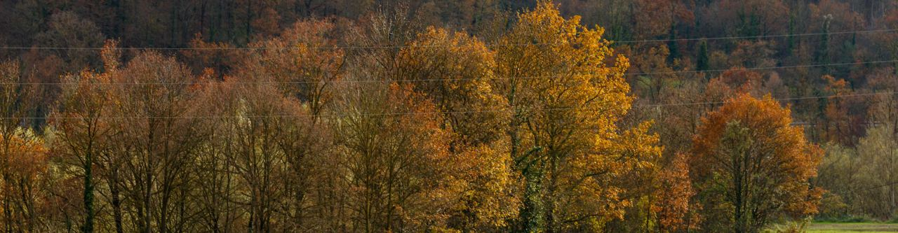

Ruta · Sant Joan
Farem un tram de la Via Verda del Ter sortint de Sant Joan de les Abadesses . Entre boscos de ribera i antigues colònies tèxtils arribarem a creuar el riu Ter. La tornada serà per la llera dreta…